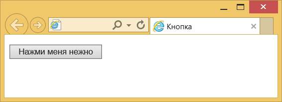
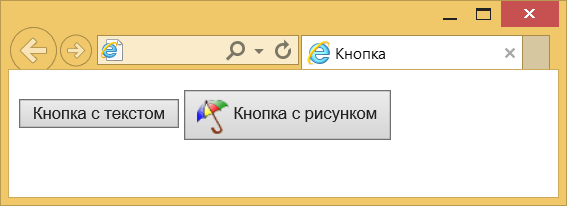
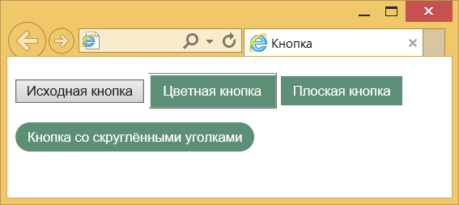

Кнопки
Кнопки являются одним из самых понятных и интуитивных элементов интерфейса. По их виду сразу становится понятно, что единственное действие, которое с ними можно производить — это нажимать на них. За счёт этой особенности кнопки часто применяются в формах, особенно при их отправке и очистке.
Кнопку на веб-странице можно создать двумя способами — с помощью элемента <input> или <button>.
Рассмотрим вначале добавление кнопки через <input> и его синтаксис.
<input type="button" атрибуты>Атрибуты кнопки перечислены в табл. 1.
| Атрибут | Описание |
|---|---|
| name | Имя кнопки; предназначено для того, чтобы обработчик формы мог его идентифицировать. |
| value | Значение кнопки и одновременно надпись на ней. |
Создание кнопки показано в примере 1.
Пример 1. Добавление кнопки
<!DOCTYPE html>
<html>
<head>
<meta charset="utf-8">
<title>Кнопка</title>
</head>
<body>
<form>
<p><input type="button" value=" Нажми меня нежно "></p>
</form>
</body>
</html>Пробелы в надписи на кнопке, в отличие от обычного текста в HTML, учитываются, поэтому можно ставить любое количество пробелов, которые в итоге влияют на ширину кнопки. Результат примера показан на рис. 1.

Рис. 1. Вид кнопки
Второй способ создания кнопки основан на использовании элемента <button>. Он по своему действию напоминает результат, получаемый с помощью <input>. Но в отличие от него предлагает расширенные возможности по созданию кнопок. Например, на подобной кнопке можно размещать любые элементы HTML, включая изображения и таблицы. На рис. 2 показаны разные виды кнопок, полученные с помощью <button>.

Рис. 2. Кнопки, созданные с помощью <button>
Синтаксис создания такой кнопки следующий.
<button атрибуты>Надпись на кнопке</button>Атрибуты перечислены в табл. 1, но в отличие от кнопки <input> атрибут value определяет только отправляемое на сервер значение, а не надпись на кнопке. Если требуется вывести на кнопке изображение, то элемент <img> добавляется внутрь <button>, как показано в примере 2.
Пример 2. Рисунок на кнопке
<!DOCTYPE html>
<html>
<head>
<meta charset="utf-8">
<title>Кнопка</title>
</head>
<body>
<form>
<p><button>Кнопка с текстом</button>
<button>
<img src="images/umbrella.gif" alt="" style="vertical-align:middle">
Кнопка с рисунком
</button></p>
</form>
</body>
</html>
В данном примере показано создание обычной кнопки с текстом, а также кнопки с одновременным использованием текста и рисунка. Размер кнопки зависит от содержимого контейнера <button>, но пробелы игнорируются, поэтому простым увеличением их количества, как в случае использования <input>, ширину кнопки изменить не удастся.
Кнопка Submit
Для отправки данных на сервер предназначена специальная кнопка Submit. Её вид ничем не отличается от обычных кнопок, но при нажатии на нее происходит выполнение серверной программы, указанной атрибутом action элемента <form>. Эта программа, называемая еще обработчиком формы, получает данные введённые пользователем в полях формы, производит с ними необходимые манипуляции, после чего возвращает результат в виде HTML-документа. Что именно делает обработчик, зависит от автора сайта, например, подобная технология применяется при создании опросов, форумов, тестов и многих других вещей.
Синтаксис создания кнопки Submit зависит от используемого элемента <input> или <button>.
<input type="submit" атрибуты>
<button type="submit">Надпись на кнопке</button>Атрибуты те же, что и у рядовых кнопок (пример 3).
Пример 3. Отправка данных на сервер
<!DOCTYPE html>
<html>
<head>
<meta charset="utf-8">
<title>Кнопка</title>
</head>
<body>
<form>
<p><input name="login"></p>
<p><input type="submit"></p>
</form>
</body>
</html>
Атрибут name для этого типа кнопки можно не писать. Если не указать значение value, то браузер самостоятельно добавит текст, он различается в зависимости от браузера. Так, Firefox пишет «Отправить запрос», IE — «Подача запроса», Opera и Chrome — «Отправить». Сам текст надписи никак на функционал кнопки не влияет.
Кнопка Reset
При нажатии на кнопку Reset данные формы возвращаются в первоначальное значение. Как правило, эту кнопку применяют для очистки введённой в полях формы информации. Для больших форм от использования кнопки Reset лучше вообще отказаться, чтобы по ошибке на неё не нажать, ведь тогда придётся заполнять форму заново.
Синтаксис создания указанной кнопки прост и похож на другие кнопки.
<input type="reset" атрибуты>
<button type="reset">Надпись на кнопке</button>В примере 4 показана форма с одним текстовым полем, которое уже содержит предварительно введённый текст с помощью атрибута value элемента <input>. После изменения текста и нажатия на кнопку «Очистить», значение поля будет восстановлено и в нём снова появится надпись «Введите текст».
Пример 4. Кнопка для очистки формы
<!DOCTYPE html>
<html>
<head>
<meta charset="utf-8">
<title>Кнопка</title>
</head>
<body>
<form>
<p><input value="Введите текст"></p>
<p><input type="submit" value="Отправить">
<input type="reset" value="Очистить"></p>
</form>
</body>
</html>
Значение кнопки Reset никогда не пересылается на сервер. Если надпись на кнопке не писать, иными словами, не задавать атрибут value, на кнопке по умолчанию будет добавлен текст «Очистить».
Цветные кнопки
Вид и цвет кнопок зависит от операционной системы и браузера. Тем не менее можно изменить цвет кнопок по своему усмотрению, воспользовавшись стилями. Для этого требуется только добавить к кнопке свойство background, как показано в примере 5. Дополнительно можно поменять цвет текста и другие параметры. Помните про одну особенность — как только вы меняете цвет фона, кнопка становится приподнятой, поэтому для «плоских» кнопок надо добавить ещё рамку, пусть даже прозрачную.
Пример 5. Вид кнопок
<!DOCTYPE html>
<html>
<head>
<meta charset="utf-8">
<title>Кнопка</title>
<style>
.btn {
background: #5d8f76; /* Цвет фона */
color: #fff; /* Цвет текста */
padding: 7px 12px; /* Поля */
margin-bottom: 1em; /* Отступ снизу */
}
.btn:hover {
background: #1e6550; /* Цвет фона при наведении курсора */
}
.btn-flat {
border: 1px transparent; /* Прозрачная рамка */
}
.btn-round {
border-radius: 20px; /* Радиус скругления */
}
</style>
</head>
<body>
<form>
<p><input type="button" value="Исходная кнопка">
<input type="button" class="btn" value="Цветная кнопка">
<input type="button" class="btn btn-flat" value="Плоская кнопка">
<input type="button" class="btn btn-flat btn-round" value="Кнопка со скруглёнными уголками"></p>
</form>
</body>
</html>Результат данного примера показан на рис. 3.

Рис. 3. Изменение вида кнопок

Все материалы сайта доступны по лицензии Creative Commons «Attribution-NonCommercial» («Атрибуция — Некоммерческое использование») 4.0 Всемирная, если не указано иное.